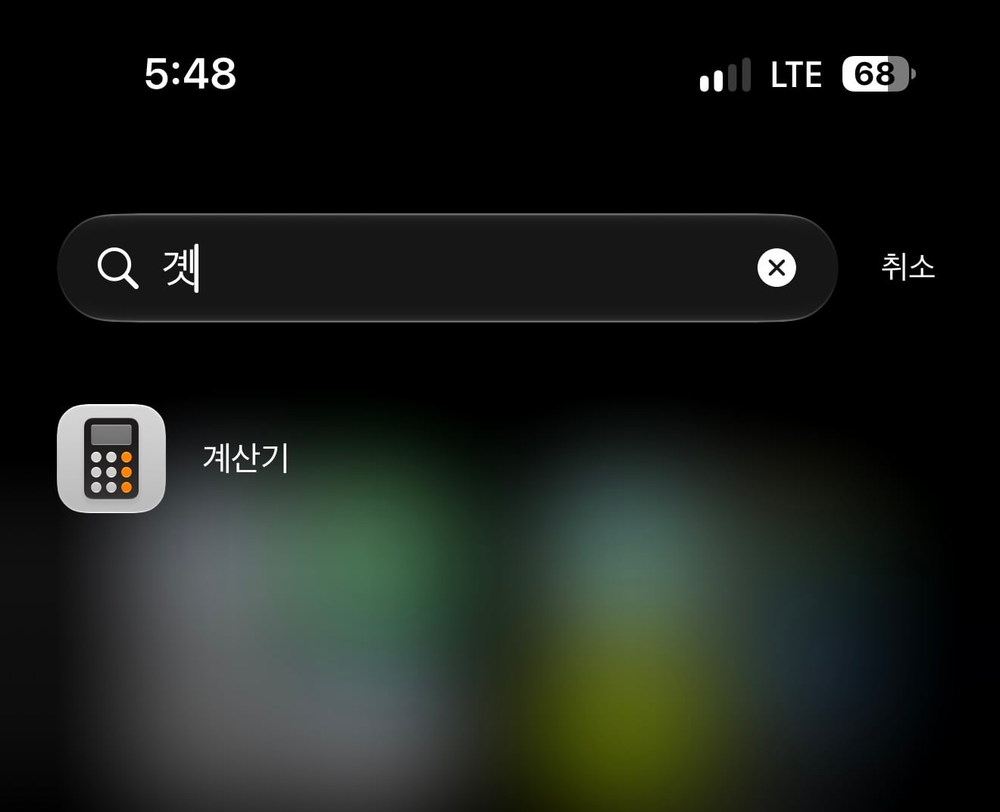
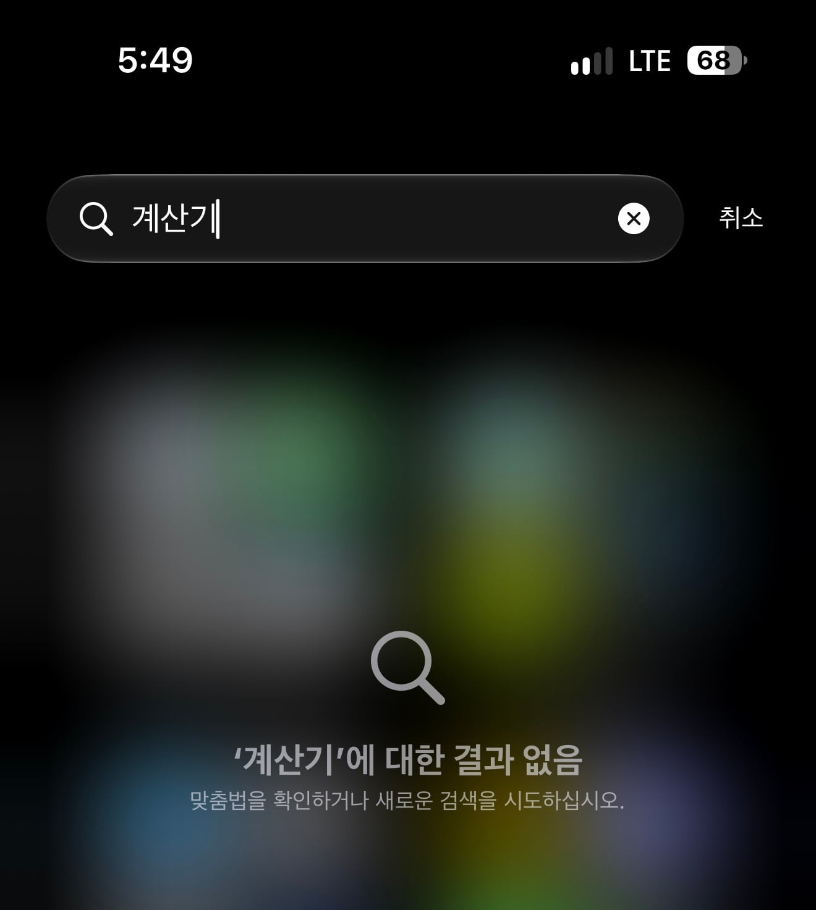

그대로임


그대로임
문자 단어 검색 안되는거 돌아버림 ㅋㅋㅋ 학생 때는 문자나 메모 검색할 일이 뭐 있나 불편함 없었는데 사회생활 시작하고서 부터 어? 싶더라
27 무조건 해야됨
왜냐면, 알람 벨소리 시스템 볼륨 연동을 드디어 해제할 수 있음
??? 갓패치네..
그게 왜 연동이 되는거임
알람소리 못듣고 지각 존나하겠네
그래서 씨-발 존나 빡쳐서 그냥 자명종 시계 삼.. 이 씨발새끼놈의 기능 때문에 한 3번 지각할뻔함..
난 이미 알람 못들어서 레이트 체크아웃에 30000원 내고 왔다 ㅅㅂ
시리 진짜 너무 멍청해
예전에 주고 받았던 업무 문자 찾을 일이 많은데 예전 문자들 검색 안 될때 ㄹㅇ 아이폰 부수고 싶었다.
영어로 하면 잘 되겠지만, 한국어를 쓰는 이상 아이폰은 버그덩어리 폰이긴 함.
한글화 ㄹㅇ 쓰레기
지금까지 아이폰만 썼는데 한글화만 보면
1. 이 새끼들이 혐한이거나
2. 한글화 담당이 병신이거나
3. 둘다이거나
내 폰으로 해보니까 화면 바로 내려서 검색하는 기능에서는 저런 거 없이 ㄱ만 쳐도 되고 심지어 계삼기 이런 식으로 오타 내도 잘 뜨네ㅋㅋ 그래서 이 글이 주작인가 하고 앱 보관함 가서 검색해 보니까 진짜 이 글처럼 저렇긴 함. 근데 굳이 앱 보관함까지 가서 검색하는 사람 있긴 한가 걍 앱 보관함 검색 기능 없애도 될듯ㅋㅋㅋ
화면 내려도 풀네임 검색하면 안뜸
방금 해봤는데 잘만 뜸
굳이가 아니라 그냥 앱을 찾으려고 앱보관함으로 간다는게 직관적이지 않음?
너 아이폰 안 쓰지
이 댓글은 렌즈 하나 깨진 아이폰16 프로에서 작성되었습니다
아이폰 쓰면서 앱 찾을 때 홈화면에서 바로 내려서 검색하지 않고 홈화면 가고 나서 굳이 제일 오른쪽까지 이동해서 앱보관함 누르고 거기에서 바로 찾는 것도 아닌 검색 기능을 이용한다고? 너무 이상한 습관인데ㅋㅋㅋ 진짜로 그렇게 쓴다고?? ㄹㅇ?
미안 난 홈 화면이 하나라서 저렇게 써…
걍 그 하나인 홈화면에서 바로 엄지 내리면 본문 같은 지랄 안 나는 제대로 된 검색 기능 이용 가능함ㅋㅋㅋ 저딴 식으로 된 앱 보관함 검색을 머하러 해… 아무리 홈화면 하나여도 결국 동작은 더 느는 건데
안된다는거지체가 문제인데 이상한습관 + 너 아이폰인쓰지 ㅋㅋㅋㅋㅋㅋㅋㅋㅋㅋㅋㅋ
와 나 앱보관함이란 기능이 잇는걸 오늘 첨암;;
앱보관함에 익숙하면 어쩔수없긔
나도 자주 앱보관함 들어갓다가 아차차하고 스팟라잇으로 검색함 ㅠ
그렇다고 앱보관함 들어가는걸 이상한습관이라고 ??? 라며 꺼드럭대는건 꿀밤놓고싶어요 ㅠ
뭐여 왜 계산기 치면 안나옴?
갤럭시는 계산기 계 ㄱㅅㄱ
다 나오는데
14프로 ios27버전인데 계산기 잘 검색되는데요 저거 뭔가 다른버전인가요
저도해봤는데 스팟라이트는 되는데 오른쪽끝화면으로 넘겨서나오는 앱보관함에선 안됨
헉진짜네 계산ㄱ 는 되는데 계산기는 안됨 ㄷㄷㄷㄷㄷ
헉 나는 잘 되는데 머지? 앱보관함에서 계산기 다 쳐도 잘 나옴 13미니, 27.0 베타임
아이폰 유저들은 이제부터 곗이라고 부름
갤럭시는 개색기 쳐도 계산기 나옴 ㅋㅋㅋㅋㅋ
파일명 자모분리도 너무 슬프고, 타이핑할 때도 분리되고 고치는 법 있는데 내가 모르는건가ㅠㅠ
자모분리는 버그라기 보단 윈도우와 맥 인코딩 차이…
아이폰 쓰면서 제일 짜증나는 상황임
유쾌 상쾌 통쾌~
시발 앱보관함 개새끼들 풀네임치면 안뜨는거 언제고치냐
스팟라이트만 쓰면 괜찮긴한데
그거 설정 들어가면 인덱싱중이라고 뜸
하루이틀 걸리더라
인덱싱 끝나야 됨
저거 인덱싱 날라가서 저러더라 시발
근데 iOS 27 최적화가 개존나 좋아짐
자음검색 안되는거도 개열받잖어 ㅋㅋ 아이폰 2년쓰고 대가리 봉합되서 바로 탈출함
나도 안나옴 ㅋㅋㅋ 이 그지같은 아이폰을 5년째 쳐 쓰고있다 ㅋㅋ좋다좋다해서 바꿨더만 개 불편해서 고장나면 바로 바꿀라고 다짐했는데 염병 지금까지 잔고장 하나 없어서 못바꾸고 있다
병신같은 아이폰..
워치 없었으면 진작 팔았을텐데 감가 생각하면 걍 써야지 싶어서 팔지도 못하고 시발ㅋㅋ
아이폰 애플워치 에어팟 싹 다 팔고
갤럭시로 넘어왔는데 갤워치, 버즈 구려서 살짝 후회함. 워치보다 차라리 핏3가 낫더라.
ㅇㅇ 핏3이 나음.
기능이 많아봐야 다 잡다하고 부수적이라.
난 갤럭시 핏3쓰다 와이프가 일 다시 시작하면서 바꾸자고해서 바꿔줬는데 영 별로임.
갤워치는 애들 통학용으로 lte버전 7, 8있어서 대충 만져봤고.
제발 멀티태스킹 좀 18 시절로 회귀시켜줘
이게뭐야 ㅋㅋㅋㅋㅋㅋ
검색엔진 완성알고리즘이 네이버만도못하다니 ㅋㅋㅋ
한글만 쓰면 ㅄ시리가되네
27.0 베타 쓰는데 앱보관함에서 풀네임 검색 잘 뜸. 베타라 그런가?
???: 애플은 소프트웨어가 진짜
ㄹㅇ 그렇네